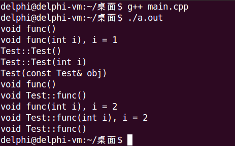
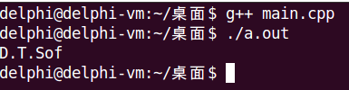

类的成员函数可以进行重载，包括
注意：函数重载必然发生在同一个作用域中，因此全局函数和类的成员函数无法构成重载。
#include <stdio.h>
class Test
{
int i;
public:
Test()
{
printf("Test::Test()\n");
this->i = 0;
}
Test(int i)
{
printf("Test::Test(int i)\n");
this->i = i;
}
Test(const Test &obj)
{
printf("Test(const Test& obj)\n");
this->i = obj.i;
}
static void func()
{
printf("void Test::func()\n");
}
void func(int i)
{
printf("void Test::func(int i), i = %d\n", i);
}
int getI()
{
return i;
}
};
void func()
{
printf("void func()\n");
}
void func(int i)
{
printf("void func(int i), i = %d\n", i);
}
int main()
{
func(); // void func()
func(1); // void func(int i), i = 1
Test t; // Test::Test()
Test t1(1); // Test::Test(int i)
Test t2(t1); // Test(const Test& obj)
func(); // void func()
Test::func(); // void Test::func()
func(2); // void func(int i), i = 2;
t1.func(2); // void Test::func(int i), i = 2
t1.func(); // void Test::func()
return 0;
}
重载的意义
#include <stdio.h>
#include <string.h>
char *strcpy(char *buf, const char *str, unsigned int n)
{
return strncpy(buf, str, n);
}
int main()
{
const char *s = "D.T.Software";
char buf[8] = {0};
strcpy(buf, s, sizeof(buf) - 1);
printf("%s\n", buf);
return 0;
}